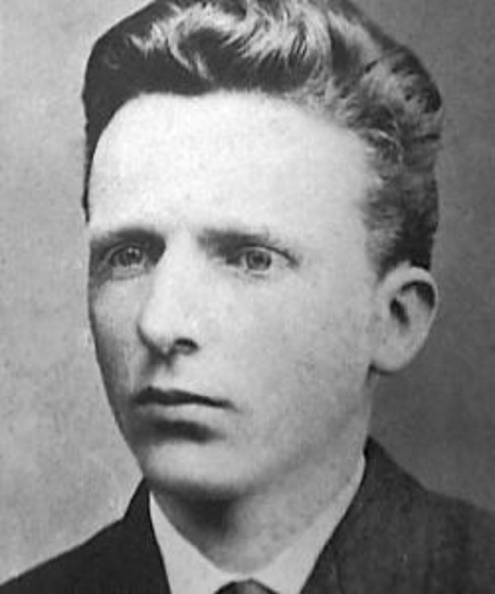

Who was Vincent Van Gogh ?
Vincent van Gogh was a post-Impressionist painter
whose work - notable for its beauty, emotion and color - highly influenced 20th-century art. He struggled with mental illness, and remained poor and virtually unknown throughout his life.
When Was Van Gogh Born?
Vincent Willem van Gogh was born on March 30, 1853, in Groot-Zundert, Netherlands.
Family ?
Vincent van Gogh’s father, Theodorus van Gogh, was an austere country minister, and his mother, Anna Cornelia Carbentus, was a moody artist whose love of nature, drawing and watercolors was transferred to her son.
Van Gogh was born exactly one year after his parents' first son, also named Vincent, was stillborn. At a young age — with his name and birthdate already etched on his dead brother's headstone — van Gogh was melancholy.
Theo van Gogh ?
The eldest of six living children, van Gogh had two younger brothers (Theo, who worked as an art dealer and supported his older brother’s art, and Cor) and three younger sisters (Anna, Elizabeth and Willemien).
- "It is good to love many things, for therein lies the true strength, and whosoever loves much performs much, and can accomplish much, and what is done in love is well done."
